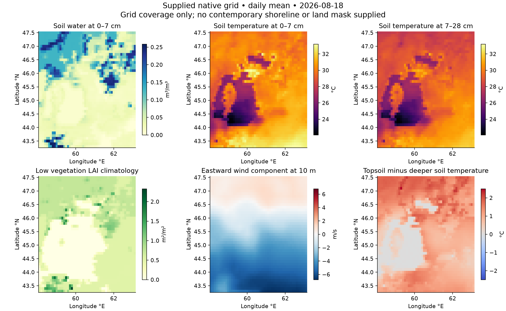
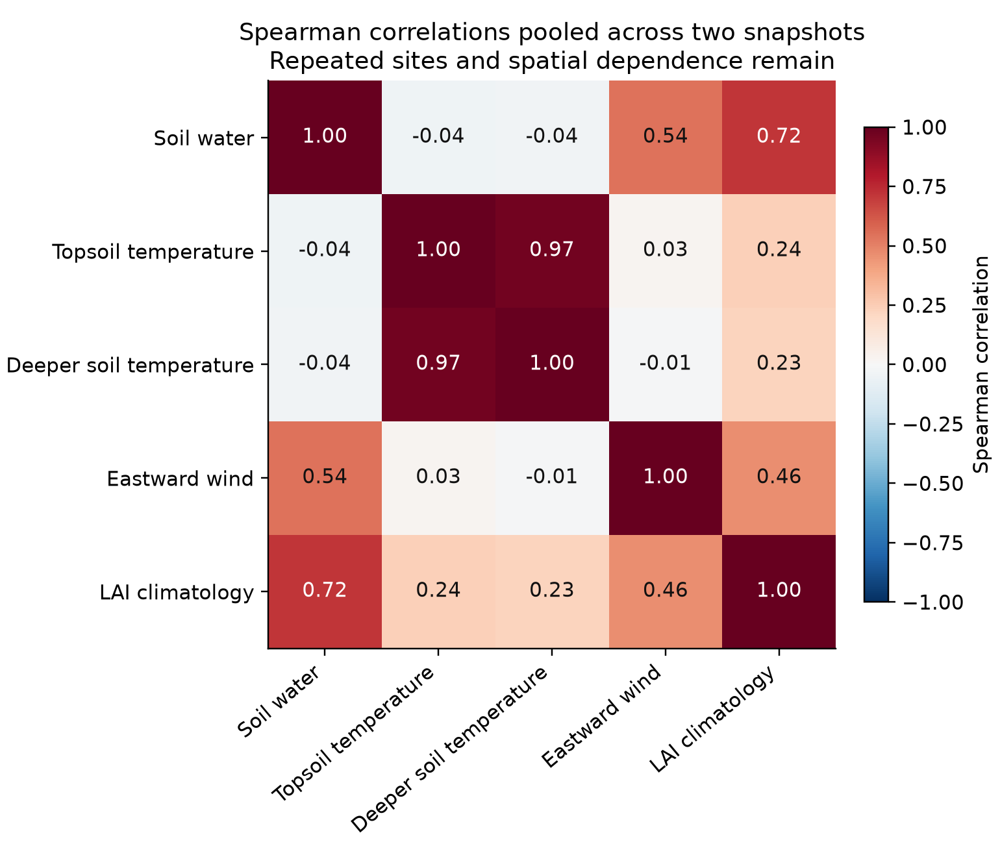
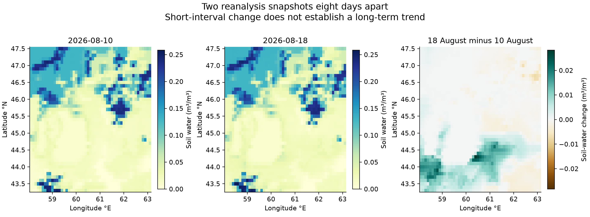
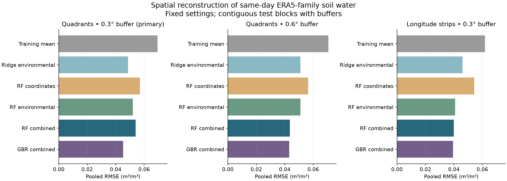
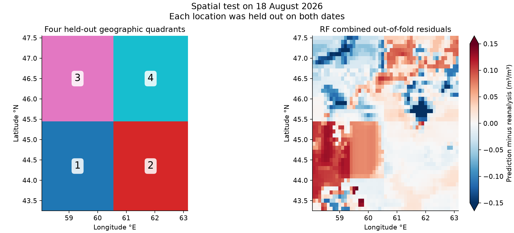

Aral Sea soil moisture experiments
A reproducible spatial analysis of the supplied daily reanalysis files, with an audit of the evidence needed for the proposed soil degradation framework.
What the experiment establishes
The local files contain two daily snapshots, 2026-08-10 and 2026-08-18, separated by 8 days. They support a spatial reconstruction experiment and a paired comparison of topsoil water. The target and environmental predictors come from the same reanalysis system. Held-out grid cells measure how well this internal spatial pattern can be reconstructed from temperature, vegetation climatology, wind and location.
The combined random forest obtained RMSE 0.0540 m³/m³ and R² 0.207, with 22.3% lower RMSE than the training-mean baseline. Individual quadrant RMSE ranged from 0.0120 to 0.0682 m³/m³.
Combined gradient boosting had the lowest primary-design RMSE among the six fixed configurations: 0.0452 m³/m³, with R² 0.444 and 34.9% lower RMSE than the training-mean baseline. This is the observed ranking within this experiment. Its quadrant R² ranged from -0.337 to 0.489, so performance varied by location.
Area-weighted mean soil water increased from 0.0589 to 0.0607 m³/m³ over the observed interval. That short comparison does not establish a long-term wetting or drying trend.
Two snapshots cannot establish multi-year drying trends or robust early-warning skill. The folder contains no Sentinel-2 reflectance bands, independent field observations, or the other two regional datasets required by the manuscript. The full salinity, profile and climate-risk fusion remains untested.
Data coverage and quality
| Property | Verified coverage |
|---|---|
| Temporal coverage | 2026-08-10 and 2026-08-18; 2 daily records, 8 days apart |
| Native grid | 43 × 51; 2,193 cells |
| Grid spacing | 0.10° latitude × 0.10° longitude |
| Extent | 43.30–47.50° N; 58.10–63.10° E |
| Complete model sites | 2,193 |
| Complete model records | 4,386 cell-date records; repeated sites stay in the same spatial block |
| Daily aggregation | The file history includes daily mean aggregation with a +5-hour shift. |
| Product identity | ERA5 family; exact ERA5 versus ERA5-Land lineage needs the original CDS request |
Coordinates are aligned exactly across files. No interpolation or synthetic observations are used. The grid covers the supplied rectangle; there is no contemporary shoreline, land mask or lake fraction to isolate exposed seabed, farmland or current water.
| Variable | Interpretation | Stored units | Valid cell-date records | Missing % | Unique values |
|---|---|---|---|---|---|
| u10 | Eastward wind at 10 m | m s**-1 | 4,386 | 0.00 | 4,134 |
| lblt | Lake bottom temperature | K | 4,386 | 0.00 | 3,916 |
| licd | Lake ice depth | m | 4,386 | 0.00 | 2 |
| lai_lv | Low vegetation LAI climatology | m**2 m**-2 | 4,386 | 0.00 | 1,059 |
| snowc | Snow cover | % | 4,386 | 0.00 | 1 |
| stl1 | Soil temperature, 0–7 cm | K | 4,386 | 0.00 | 3,890 |
| stl2 | Soil temperature, 7–28 cm | K | 4,386 | 0.00 | 3,848 |
| swvl1 | Topsoil water, 0–7 cm | m**3 m**-3 | 4,386 | 0.00 | 3,436 |
Quality control identified 37 tiny negative soil-moisture values and 4,386 tiny negative lake-ice values (approximately 10⁻²⁰ and 10⁻¹⁹). Values between −10⁻¹² and zero are set to zero only for the analysis. The original NetCDF files and native_grid_values.csv preserve the raw values. This correction does not create observations or interpolate missing data.
Whole-grid lake temperature and ice summaries in the CSVs are numerical diagnostics only. Without lake fraction, they cannot be interpreted as lake-only averages or current Aral Sea conditions. The nominal grid spacing does not alone prove product lineage. Daily sampling frequency and the exact product request require retrieval provenance. Full input metadata and SHA-256 hashes · Input inventory CSV
Patterns across the two supplied dates
| Variable | Unit | Area-weighted mean | Median | Minimum | Maximum | 5th percentile | 95th percentile |
|---|---|---|---|---|---|---|---|
| Topsoil water, 0–7 cm | m³/m³ | 0.0598 | 0.0284 | 0.0000 | 0.2584 | 0.0100 | 0.1972 |
| Soil temperature, 0–7 cm | °C | 32.2965 | 31.4479 | 22.0668 | 38.3875 | 26.3334 | 37.1853 |
| Soil temperature, 7–28 cm | °C | 30.4607 | 30.5363 | 22.0678 | 35.6731 | 26.2931 | 33.7008 |
| Eastward wind at 10 m | m/s | -2.0854 | -1.7204 | -6.7887 | 1.3468 | -5.7121 | 0.9171 |
| Low vegetation LAI climatology | m²/m² | 0.4542 | 0.5156 | 0.0000 | 2.3299 | 0.0000 | 0.8918 |
| Topsoil minus deeper soil temperature | °C | 1.8357 | 1.6205 | -0.1241 | 5.0284 | -0.0001 | 3.9846 |
Mean values use cell-area weights proportional to cos(latitude). Medians, percentiles and correlation coefficients are unweighted descriptions. This table pools both dates; the maps below show only the latest date. Spatial variation is distinct from change between dates.

| Predictor associated with topsoil water | Pairs | Pearson r | Spearman rho |
|---|---|---|---|
| Soil temperature, 0–7 cm | 4,386 | 0.034 | -0.043 |
| Soil temperature, 7–28 cm | 4,386 | 0.023 | -0.038 |
| Eastward wind at 10 m | 4,386 | 0.497 | 0.545 |
| Low vegetation LAI climatology | 4,386 | 0.580 | 0.716 |
| Topsoil minus deeper soil temperature | 4,386 | 0.051 | 0.110 |
These associations are descriptive. Nearby cells are dependent and the variables share a model origin; correlations do not establish environmental causes. No correlation significance tests or confidence intervals are reported.

Change over the observed interval
Cells are paired at the same coordinates between 2026-08-10 and 2026-08-18. All differences are second date minus first date. This is one 8-day comparison, not an estimated long-term trend or an anomaly against a climatological baseline.
| Variable | Unit | Mean 2026-08-10 | Mean 2026-08-18 | Mean change | Median change | Decreasing area % | Increasing area % |
|---|---|---|---|---|---|---|---|
| Topsoil water, 0–7 cm | m³/m³ | 0.0589 | 0.0607 | 0.0018 | 0.0001 | 33.3 | 55.0 |
| Soil temperature, 0–7 cm | °C | 34.8466 | 29.7463 | -5.1003 | -5.3920 | 100.0 | 0.0 |
| Soil temperature, 7–28 cm | °C | 32.1521 | 28.7693 | -3.3828 | -3.4314 | 100.0 | 0.0 |
| Eastward wind at 10 m | m/s | -1.6534 | -2.5174 | -0.8640 | -0.8860 | 67.4 | 32.6 |
| Low vegetation LAI climatology | m²/m² | 0.4550 | 0.4533 | -0.0017 | 0.0000 | 19.5 | 0.0 |
Means, mean changes and increasing/decreasing percentages use cos(latitude) area weights. Median changes are unweighted. Changes with magnitude at most 10⁻¹² are counted as unchanged; this accounts for any remaining percentage. LAI differences reflect a prescribed climatology.

Persistence over one temporal pair
| Benchmark | RMSE m³/m³ | MAE m³/m³ | Bias m³/m³ | R² |
|---|---|---|---|---|
| Carry first-date soil water forward | 0.0049 | 0.0026 | -0.0018 | 0.993 |
This benchmark uses the 2026-08-10 soil-water value at each cell as its prediction for 2026-08-18, without fitting a model. It quantifies the error of no change over this one 8-day interval. It is a different task from the spatial reconstruction models, which use contemporaneous covariates. A single date pair cannot verify a learned temporal forecast or a degradation early-warning system. High persistence R² mainly indicates that the spatial soil-water pattern changes little across this pair; it cannot be compared directly with spatial holdout R².
Experimental design
Target: same-day volumetric soil water in the 0–7 cm layer. Environmental predictors: soil temperature at 0–7 and 7–28 cm, signed eastward wind at 10 m, and low vegetation leaf area index (LAI) climatology. Temperatures are converted from kelvin to degrees Celsius. Latitude and longitude form the geographic feature set. Both dates are pooled for fitting and scoring. A site’s two observations are always assigned to the same held-out block, so a location cannot appear in both training and testing.
Six model configurations are evaluated without tuning on the held-out cells. Geographic-only and environmental-only random forests test the contribution of each feature group. Lake temperature and ice are excluded because a lake fraction mask is missing. Snow is excluded from the declared feature set. The temperature difference is described in correlations but is not an additional model predictor.
| Model | Predictors | Fixed settings |
|---|---|---|
| Training mean | No predictors | Area-weighted training target mean |
| Ridge environmental | Two soil temperatures, u10, LAI | StandardScaler then Ridge; alpha 10 |
| RF coordinates | Latitude and longitude | 200 trees; minimum leaf 10; all features considered |
| RF environmental | Two soil temperatures, u10, LAI | 200 trees; minimum leaf 10; all features considered |
| RF combined | Environmental features and coordinates | 200 trees; minimum leaf 10; all features considered |
| Gradient boosting combined | Environmental features and coordinates | 150 stages; learning rate 0.03; depth 2; minimum leaf 10; squared error |
The seed is 20261002. Training and metric weights are proportional to cos(latitude). The ridge scaler is fitted only on its training fold; ridge regression receives area weights. Tree fits receive area weights directly. Predictions are not clipped or calibrated afterward.
Separation and sensitivity checks
The primary design partitions cells into four geographic quadrants using the grid extent midpoints. Each block is held out once. Training cells within 0.3° of the held rectangle are excluded. The separation uses max(distance in latitude, distance in longitude) in degrees; it is a rectangular coordinate buffer, not a geodesic distance in kilometres. Two fixed sensitivity designs widen the quadrant buffer to 0.6° or replace quadrants with four longitude strips and a 0.3° buffer. The designs test sensitivity to separation and split geometry.
| Design | Test block | Training records | Test records | Excluded records |
|---|---|---|---|---|
| Four quadrants with 0.3° buffer | 1 | 2,986 | 1,100 | 300 |
| Four quadrants with 0.3° buffer | 2 | 2,936 | 1,144 | 306 |
| Four quadrants with 0.3° buffer | 3 | 3,042 | 1,050 | 294 |
| Four quadrants with 0.3° buffer | 4 | 2,994 | 1,092 | 300 |
| Four quadrants with 0.6° buffer | 1 | 2,650 | 1,100 | 636 |
| Four quadrants with 0.6° buffer | 2 | 2,594 | 1,144 | 648 |
| Four quadrants with 0.6° buffer | 3 | 2,712 | 1,050 | 624 |
| Four quadrants with 0.6° buffer | 4 | 2,658 | 1,092 | 636 |
| Four longitude strips with 0.3° buffer | 1 | 3,010 | 1,118 | 258 |
| Four longitude strips with 0.3° buffer | 2 | 2,838 | 1,032 | 516 |
| Four longitude strips with 0.3° buffer | 3 | 2,752 | 1,118 | 516 |
| Four longitude strips with 0.3° buffer | 4 | 3,010 | 1,118 | 258 |
Counts in this table are cell-date records. Every complete cell-date record receives one held-out prediction per model and design. Pooled RMSE, MAE, bias and R² are recomputed over those predictions using area weights; they are not averages of fold scores. Bias is prediction minus target. MSE skill is 1 − model MSE / training-mean baseline MSE; negative values mean worse performance. Pooled R² uses the held-out target mean as its reference. Fold ranges describe observed variation across these four blocks; they are not confidence intervals.
Reconstruction results
Four quadrants with 0.3° buffer · primary
| Model | RMSE m³/m³ | MAE m³/m³ | Bias m³/m³ | Pooled R² | MSE skill % | Block RMSE range |
|---|---|---|---|---|---|---|
| Training mean | 0.0695 | 0.0586 | 0.0027 | -0.314 | 0.0 | 0.0586–0.0862 |
| Ridge environmental | 0.0488 | 0.0384 | -0.0009 | 0.353 | 50.8 | 0.0355–0.0599 |
| RF coordinates | 0.0571 | 0.0365 | -0.0153 | 0.113 | 32.5 | 0.0192–0.0758 |
| RF environmental | 0.0521 | 0.0352 | 0.0107 | 0.263 | 43.9 | 0.0127–0.0740 |
| RF combined | 0.0540 | 0.0367 | 0.0026 | 0.207 | 39.6 | 0.0120–0.0682 |
| Gradient boosting combined | 0.0452 | 0.0318 | 0.0032 | 0.444 | 57.7 | 0.0125–0.0549 |
Four quadrants with 0.6° buffer · sensitivity
| Model | RMSE m³/m³ | MAE m³/m³ | Bias m³/m³ | Pooled R² | MSE skill % | Block RMSE range |
|---|---|---|---|---|---|---|
| Training mean | 0.0706 | 0.0603 | 0.0053 | -0.357 | 0.0 | 0.0625–0.0853 |
| Ridge environmental | 0.0510 | 0.0408 | -0.0031 | 0.292 | 47.9 | 0.0367–0.0607 |
| RF coordinates | 0.0564 | 0.0372 | -0.0142 | 0.134 | 36.2 | 0.0216–0.0718 |
| RF environmental | 0.0509 | 0.0353 | 0.0110 | 0.294 | 48.0 | 0.0139–0.0699 |
| RF combined | 0.0435 | 0.0280 | -0.0030 | 0.484 | 62.0 | 0.0135–0.0571 |
| Gradient boosting combined | 0.0431 | 0.0299 | 0.0037 | 0.494 | 62.7 | 0.0137–0.0549 |
Four longitude strips with 0.3° buffer · sensitivity
| Model | RMSE m³/m³ | MAE m³/m³ | Bias m³/m³ | Pooled R² | MSE skill % | Block RMSE range |
|---|---|---|---|---|---|---|
| Training mean | 0.0619 | 0.0504 | -0.0005 | -0.042 | 0.0 | 0.0526–0.0772 |
| Ridge environmental | 0.0461 | 0.0347 | -0.0009 | 0.422 | 44.6 | 0.0370–0.0526 |
| RF coordinates | 0.0543 | 0.0344 | -0.0061 | 0.198 | 23.0 | 0.0491–0.0590 |
| RF environmental | 0.0409 | 0.0249 | 0.0013 | 0.545 | 56.4 | 0.0334–0.0457 |
| RF combined | 0.0399 | 0.0231 | -0.0043 | 0.566 | 58.4 | 0.0347–0.0459 |
| Gradient boosting combined | 0.0394 | 0.0241 | -0.0038 | 0.577 | 59.4 | 0.0331–0.0463 |

Combined random forest across validation designs
- Four quadrants with 0.3° buffer: RMSE 0.0540 m³/m³; R² 0.207; 22.3% lower RMSE than the training-mean baseline.
- Four quadrants with 0.6° buffer: RMSE 0.0435 m³/m³; R² 0.484; 38.3% lower RMSE than the training-mean baseline.
- Four longitude strips with 0.3° buffer: RMSE 0.0399 m³/m³; R² 0.566; 35.5% lower RMSE than the training-mean baseline.
Differences between designs show dependence on geographic split and separation. They do not select a deployment model or estimate transfer to a new region or year. The coordinate-only forest quantifies how much spatial pattern can be reproduced from location alone; environmental-model gains should be read alongside this reference.
Primary-design combined random forest by test block
| Test block | Training records | Test records | RMSE m³/m³ | MAE m³/m³ | Bias m³/m³ | R² |
|---|---|---|---|---|---|---|
| 1 | 2,986 | 1,100 | 0.0682 | 0.0530 | 0.0411 | -1.503 |
| 2 | 2,936 | 1,144 | 0.0120 | 0.0077 | 0.0027 | 0.526 |
| 3 | 3,042 | 1,050 | 0.0591 | 0.0445 | -0.0356 | -0.017 |
| 4 | 2,994 | 1,092 | 0.0597 | 0.0437 | -0.0010 | 0.124 |

Pooled model scores · All fold scores · All held-out predictions
What the manuscript still requires
The manuscript describes a 2019–2024 study in three regions. Its new numerical claims are not reproduced by this two-date experiment. Previously published performance values are attributed to source studies in the draft; they are not new measurements made here. The original Word file is unchanged.
| Module | Required evidence | Outputs not established |
|---|---|---|
| Salinity segmentation | Sentinel-2 L2A surface reflectance B2, B3, B4, B8, B8A, B11 and B12, with dates, georeferencing and quality masks; NDVI, NDWI, NDSI, BI and SI1-SI5, with explicit index definitions; ERA5-Land soil-water layers used by the original model; Independent salinity and soil-class observations to validate saline, normal and sandy classes and continuous salinity | Validated saline-soil probability; Validated saline/normal/sandy classification; Continuous salinity regression; Reproduced M1 performance |
| Soil profile stratification | Sentinel-2 spectral features; DEM and derived elevation, slope, aspect, curvature, TRI, TPI and distance to water; OpenLandMap static covariates with provenance; Independent clay, sand, bulk density, texture and horizon targets at 0, 10, 30, 60, 100 and 200 cm | Validated physical soil-property profiles; Validated horizon or texture classes; Validated stratification instability index; Reproduced M2 performance |
| Climate-risk trajectory | Topsoil volumetric soil water, precipitation, potential evapotranspiration and vapour pressure deficit over 2019-2024; Independent dated drought or salinization progression targets, with explicit units and spatial support; A training-only anomaly baseline and a defined prediction horizon | The manuscript's supervised Climate Stress Index; Validated degradation prediction; Reproduced three-region CSI means |
| Entropy-weighted fusion | Validated and aligned M1 saline probability, M2 instability and M3 CSI; Training-only scaling and entropy weights; Independent degradation observations for validation | Full SDRI maps; Validated SDRI regional distributions; Verified High and Critical area shares |
| Alternative neural fusion | Trained M1 and M2 feature representations; Climate anomaly sequences for a GRU branch; Verified degradation outcome labels | Trained neural SDRI; Neural versus analytic fusion comparison |
| Fusion surrogate and SHAP | Computed SDRI targets; Spectral, terrain and climate covariates; Held-out surrogate fidelity assessment | Verified composite SHAP rankings; Evidence that CSI improves degradation prediction |
| Warning threshold calibration | Computed SDRI; Independent spatial erosion or degradation reference; Explicit multiclass or ordinal threshold calibration method | Outcome-calibrated warning tiers; Validated management thresholds |
| Spatial and temporal validation | All three regional datasets and outcomes; Chronological training years and 2024 holdout; SMAP observations and matched ERA5-Land samples for the stated external moisture comparison | Three leave-region-out fold scores; Verified 2024 early-warning skill; Reproduced ERA5-Land versus SMAP statistics |
Audit of numerical claims already present in the draft
| Location | Draft claim | Evidence status |
|---|---|---|
| 2.1 | ERA5-Land versus SMAP mean correlation 0.71 +/- 0.06 and RMSE 0.039 m3/m3 across three regions | No matched observations or calculation artifacts supplied |
| 4.2 | Statistically significant Aral SWVL1 drying over 2019-2024 with p < 0.05 | Not verified from supplied data |
| 4.2 | Regional mean CSI approximately 0.71 | No trained CSI model, labels or outputs supplied |
| 4.2 | Regional mean CSI approximately 0.44 | No trained CSI model, labels or outputs supplied |
| 4.2 | Mean CSI approximately 0.30-0.58 depending on location | No trained CSI model, labels or outputs supplied |
| Table 4 | Low/Moderate/High/Critical percentages 4/18/39/39; combined High and Critical 78% | No SDRI raster or area calculation supplied |
| Table 4 | Low/Moderate/High/Critical percentages 22/41/28/9 | No SDRI raster or area calculation supplied |
| Table 4 | Low/Moderate/High/Critical percentages 31/35/24/10 | No SDRI raster or area calculation supplied |
| 4.4 | Fusion Spearman correlation declines moderately, analogized to a 2-4 percentage-point M2 accuracy loss | Actual correlation values, fold scores, sample counts and uncertainty are absent; unlike metrics are compared |
| 4.5 | B11, elevation and distance to water are the top three predictors; CSI is among the top five at Aral | No surrogate model, fidelity score, SHAP values or ranking artifact supplied |
Introduction and conclusion instead state M2 R2 0.86-0.97 and classification accuracy 94-98%, without reconciling the evaluation settings.
Methodological fixes before a full study
- Define measurable targets, units, forecast horizon, sample counts and spatial support before fitting CSI or describing early-warning skill.
- Fit anomaly baselines, preprocessing, cluster stages, stacking and fusion weights only inside training folds; exclude temporal holdout observations from all fitting.
- Do not use variance of a series standardized on that same series as an informative feature: it is approximately one by construction. Define rolling or held-out variability against a training baseline if needed.
- Keep Mann-Kendall statistic/tau distinct from Sen slope; report physical slope units, sample count and uncertainty. Address seasonality, serial dependence and multiple comparisons before significance claims.
- Respect native climate-cell and temporal groups in validation. Resampling coarse climate data to a fine grid does not create independent observations or finer climate information.
- Validate soil salinity against independent observations. Accuracy against cluster-derived labels measures cluster reproduction and cannot establish soil salinity accuracy.
- Resolve M1 two-cluster versus three-class inconsistency, align cluster labels before voting, handle DBSCAN noise and define continuous salinity targets and spectral formulas.
- Train stacking meta-models using out-of-fold base predictions; group depths from the same soil profile and document target provenance.
- Treat class entropy as model uncertainty or class mixing until its relationship with observed structural degradation is validated; specify depth aggregation.
- Report entropy weights and handle constant or zero indicators. Spatial variation is not evidence of reliability, and weights do not by themselves establish transfer robustness.
- Calibrate warning thresholds with actual independent outcomes, report calibration metrics, and use contiguous intervals. The stated quarter ranges leave gaps for continuous scores.
- Distinguish erosion-reference agreement from validation of salinity, profile disturbance and future degradation. Prospective outcomes are required for early-warning claims.
- Measure held-out surrogate fidelity before interpreting SHAP. Surrogate attributions do not establish causal environmental drivers.
- Provide exact regional polygons, datasets, seeds, hyperparameters, fold scores and sample counts; reconcile contradictory M2 summaries and incomplete references.
Limits of interpretation
- Two dates eight days apart cannot establish climate trends, climatological anomalies, or validated early-warning skill.
- No Sentinel-2 reflectance, field labels, other regions, land mask or lake fraction supplied.
- Predictors and soil-moisture target share a reanalysis model; reconstruction is not independent validation.
- Both dates of each cell are held out together. Training uses both dates; reconstruction is spatial, not prospective forecasting.
- Held-out blocks are adjacent within one region. Buffers reduce nearby overlap but do not eliminate spatial dependence.
- Lake fields are excluded from models because lake fraction is absent. LAI is prescribed climatology.
- Product lineage (ERA5 vs ERA5-Land) and hourly sampling need the original CDS request to confirm.
- All model settings are fixed; design comparisons are sensitivity checks, not selection of a deployment model.
The eastward wind component can be negative and is not scalar wind speed. A second component would be required to reconstruct wind magnitude. LAI represents prescribed climatology, so this pair of snapshots cannot identify recent vegetation recovery. Lake variables describe modelled lake physics and cannot establish changing lake area. Zero ice or snow values are observations of those model fields, not evidence of soil degradation.
Results paragraph for the manuscript
Suggested text for a clearly labelled preliminary experiment. Its scope should also be reflected in the abstract, methods and conclusions before insertion.
The eight supplied NetCDF files contained two daily snapshots dated 2026-08-10 and 2026-08-18 on a 43 × 51 grid (0.10° latitude × 0.10° longitude), comprising 2,193 spatial cells and 4,386 complete cell-date records. Area-weighted mean topsoil volumetric water content changed from 0.0589 to 0.0607 m³/m³ over the 8-day interval, a mean difference of 0.0018 m³/m³. In four spatially contiguous held-out quadrants separated from training cells by a 0.3° rectangular buffer, with both observations at each site assigned to the same block, the combined random forest obtained pooled RMSE 0.0540 m³/m³, MAE 0.0367 m³/m³ and R² 0.207, compared with training-mean RMSE 0.0695 m³/m³ (22.3% lower RMSE than the training-mean baseline). Its block-specific RMSE ranged from 0.0120 to 0.0682 m³/m³. The lowest primary-design RMSE among the six fixed configurations was obtained by combined gradient boosting (0.0452 m³/m³; R² 0.444); its block R² ranged from -0.337 to 0.489. An untrained persistence benchmark carried the first soil-moisture field forward 8 days and obtained RMSE 0.0049 m³/m³ on the second date. This single temporal pair cannot establish general forecast skill. The learned-model results measure same-day spatial reconstruction of soil moisture within the supplied reanalysis. The data do not support multi-year drying trends, independent field validation, salinity estimation or validation of the proposed CSI and SDRI.
Reproduce the experiment
Run these PowerShell commands from the project folder. The installation step is needed only when the local analysis dependencies are absent. Input files remain unchanged. Outputs are rebuilt in results/, and dependencies are isolated in .analysis_deps/.
& 'C:/Users/qorqy/.cache/codex-runtimes/codex-primary-runtime/dependencies/python/python.exe' -m pip install --target .analysis_deps -r requirements-analysis.txt & 'C:/Users/qorqy/.cache/codex-runtimes/codex-primary-runtime/dependencies/python/python.exe' scripts/audit_inputs.py & 'C:/Users/qorqy/.cache/codex-runtimes/codex-primary-runtime/dependencies/python/python.exe' scripts/run_experiments.py & 'C:/Users/qorqy/.cache/codex-runtimes/codex-primary-runtime/dependencies/python/python.exe' scripts/build_report.py
Data audit script · Experiment script · Report generator · Pinned package versions · Experiment summary JSON
Independent checks recomputed the reported errors, paired changes, spatial splits and prediction coverage from the exported data, and confirmed the eight input file hashes. Verification results · Rerunnable verification script
| Package | Version |
|---|---|
| numpy | 2.5.3 |
| pandas | 3.0.6 |
| xarray | 2026.9.0 |
| netCDF4 | 1.7.4 |
| scipy | 1.18.1 |
| scikit-learn | 1.9.1 |
| matplotlib | 3.11.2 |
The input metadata file records SHA-256 hashes to identify the exact eight files. No extra environmental dataset was downloaded for these experiments.
Sources for interpreting the variables
These primary sources support variable meanings and product limitations. They do not verify the manuscript’s new numerical results or replace the missing original CDS request.